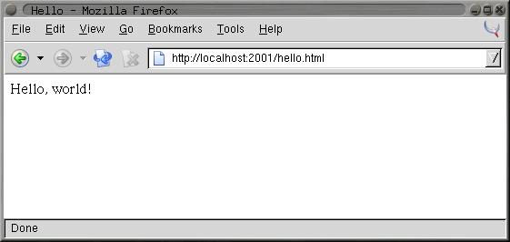
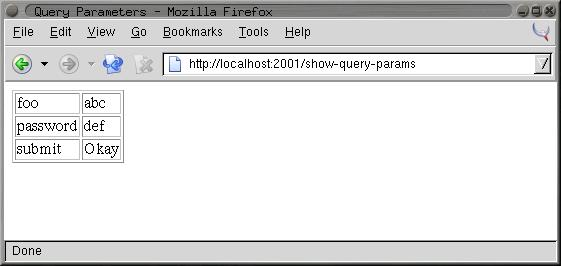
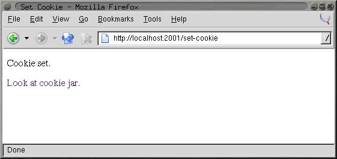
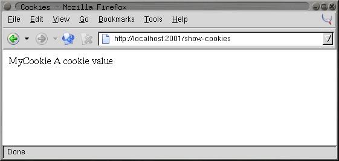

In this chapter you'll look at one way to develop Web-based programs in Common Lisp, using the open-source AllegroServe Web server. This isn't meant as a full introduction to AllegroServe. And I'm certainly not going to cover anything more than a tiny corner of the larger topic of Web programming. My goal here is to cover enough of the basics of using AllegroServe that you'll be able, in Chapter 29, to develop an application for browsing a library of MP3 files and streaming them to an MP3 client. Similarly, this chapter will serve as a brief introduction to Web programming for folks new to the topic.
While Web programming today typically involves quite a number of software frameworks and different protocols, the core bits of Web programming haven't changed much since they were invented in the early 1990s. For simple applications, such as the one you'll write in Chapter 29, you need to understand only a few key concepts, so I'll review them quickly here. Experienced Web programmers can skim or skip the rest of this section.1
To start, you need to understand the roles the Web browser and the Web server play in Web programming. While a modern browser comes with a lot of bells and whistles, the core functionality of a Web browser is to request Web pages from a Web server and then render them. Typically those pages will be written in the Hypertext Markup Language (HTML), which tells the browser how to render the page, including where to insert inline images and links to other Web pages. HTML consists of text marked up with tags that give the text a structure that the browser uses when rendering the page. For instance, a simple HTML document looks like this:
<html> <head> <title>Hello</title> </head> <body> <p>Hello, world!</p> <p>This is a picture: <img src="some-image.gif"></p> <p>This is a <a href="another-page.html">link</a> to another page.</p> </body> </html>
Figure 26-1 shows how the browser renders this page.
The browser and server communicate using a protocol called the Hypertext Transfer Protocol (HTTP). While you don't need to worry about the details of the protocol, it's worth understanding that it consists entirely of a sequence of requests initiated by the browser and responses generated by the server. That is, the browser connects to the Web server and sends a request that includes, at the least, the desired URL and the version of HTTP that the browser speaks. The browser can also include data in its request; that's how the browser submits HTML forms to the server.
To reply to a request, the server sends a response made up of a set of headers and a body. The headers contain information about the body, such as what type of data it is (for instance, HTML, plain text, or an image), and the body is the data itself, which is then rendered by the browser. The server can also send an error response telling the browser that its request couldn't be answered for some reason.
And that's pretty much it. Once the browser has received the complete response from the server, there's no communication between the browser and the server until the next time the browser decides to request a page from the server.2 This is the main constraint of Web programming--there's no way for code running on the server to affect what the user sees in their browser unless the browser issues a new request to the server.3
Some Web pages, called static pages, are simply HTML files stored on the Web server and served up when requested by the browser. Dynamic pages, on the other hand, consist of HTML generated each time the page is requested by a browser. For instance, a dynamic page might be generated by querying a database and then constructing HTML to represent the results of the query.4
When generating its response to a request, server-side code has four main pieces of information to act on. The first piece of information is the requested URL. Typically, however, the URL is used by the Web server itself to determine what code is responsible for generating the response. Next, if the URL contains a question mark, everything after the question mark is considered to be a query string, which is typically ignored by the Web server except that it makes it available to the code generating the response. Most of the time the query string contains a set of key/value pairs. The request from the browser can also contain post data, which also usually consists of key/value pairs. Post data is typically used to submit HTML forms. The key/value pairs supplied in either the query string or the post data are collectively called the query parameters.
Finally, in order to string together a sequence of individual requests from the same browser, code running in the server can set a cookie, sending a special header in its response to the browser that contains a bit of opaque data called a cookie. After a cookie is set by a particular server, the browser will send the cookie with each request it sends to that server. The browser doesn't care about the data in the cookie--it just echoes it back to the server for the server-side code to interpret however it wants.
These are the primitive elements on top of which 99 percent of server-side Web programming is built. The browser sends a request, the server finds some code to handle the request and runs it, and the code uses query parameters and cookies to determine what to do.
You can serve Web content using Common Lisp in a number of ways; there are at least three open-source Web servers written in Common Lisp as well as plug-ins such as mod_lisp5 and Lisplets6 that allow the Apache Web server or any Java Servlet container to delegate requests to a Lisp server running in a separate process.
For this chapter, you'll use a version of the open-source Web server AllegroServe, originally written by John Foderaro at Franz Inc.. AllegroServe is included in the version of Allegro available from Franz for use with this book. If you're not using Allegro, you can use PortableAllegroServe, a friendly fork of the AllegroServe code base, which includes an Allegro compatibility layer that allows PortableAllegroServe to run on most Common Lisps. The code you'll write in this chapter and in Chapter 29 should run in both vanilla AllegroServe and PortableAllegroServe.
AllegroServe provides a programming model similar in spirit to Java Servlets--each time a browser requests a page, AllegroServe parses the request and looks up an object, called an entity, which handles the request. Some entity classes provided as part of AllegroServe know how to serve static content--either individual files or the contents of a directory tree. Others, the ones I'll spend most of this chapter discussing, run arbitrary Lisp code to generate the response.7
But before I get to that, you need to know how to start AllegroServe
and set it up to serve a few files. The first step is to load the
AllegroServe code into your Lisp image. In Allegro, you can simply
type (require :aserve). In other Lisps (or in Allegro), you
can load PortableAllegroServe by loading the file INSTALL.lisp
at the top of the portableaserve directory tree. Loading
AllegroServe will create three new packages, NET.ASERVE,
NET.HTML.GENERATOR, and NET.ASERVE.CLIENT.8
After loading the server, you start it with the function start
in the NET.ASERVE package. To have easy access to the symbols
exported from NET.ASERVE, from COM.GIGAMONKEYS.HTML (a
package I'll discuss in a moment), and from the rest of Common Lisp,
you should create a new package to play in like this:
CL-USER> (defpackage :com.gigamonkeys.web
(:use :cl :net.aserve :com.gigamonkeys.html))
#<The COM.GIGAMONKEYS.WEB package>Now switch to that package with this IN-PACKAGE expression:
CL-USER> (in-package :com.gigamonkeys.web) #<The COM.GIGAMONKEYS.WEB package> WEB>
Now you can use the exported names from NET.ASERVE without
qualification. The function start starts the server. It takes
quite a number of keyword parameters, but the only one you need to
pass is :port, which specifies the port to listen on. You
should probably use a high port such as 2001 instead of the default
port for HTTP servers, 80, because on Unix-derived operating systems
only the root user can listen on ports below 1024. To run
AllegroServe listening on port 80 on Unix, you'd need to start Lisp
as root and then use the :setuid and :setgid parameters
to tell start to switch its identity after opening the port.
You can start a server listening on port 2001 like this:
WEB> (start :port 2001) #<WSERVER port 2001 @ #x72511c72>
The server is now running in your Lisp. It's possible you'll get an
error that says something about "port already in use" when you try to
start the server. This means port 2001 is already in use by some
other server on your machine. In that case, the simplest fix is to
use a different port, supplying a different argument to start
and then using that value instead of 2001 in the URLs used throughout
this chapter.
You can continue to interact with Lisp via the REPL because AllegroServe starts its own threads to handle requests from browsers. This means, among other things, that you can use the REPL to get a view into the guts of your server while it's running, which makes debugging and testing a lot easier than if the server is a complete black box.
Assuming you're running Lisp on the same machine as your browser, you
can check that the server is up and running by pointing your browser
at http://localhost:2001/. At this point you should get a
page-not-found error message in the browser since you haven't
published anything yet. But the error message will be from
AllegroServe; it'll say so at the bottom of the page. On the other
hand, if the browser displays an error dialog that says something
like "The connection was refused when attempting to contact
localhost:2001," it means either that the server isn't running or
that you started it with a different port than 2001.
Now you can publish some files. Suppose you have a file
hello.html in the directory /tmp/html with the following
contents:
<html> <head> <title>Hello</title> </head> <body> <p>Hello, world!</p> </body> </html>
You can publish it individually with the publish-file
function.
WEB> (publish-file :path "/hello.html" :file "/tmp/html/hello.html") #<NET.ASERVE::FILE-ENTITY @ #x725eddea>
The :path argument is the path that will appear in the URL
requested by the browser, while the :file argument is the name
of the file in the file system. After evaluating the
publish-file expression, you can point your browser to
http://localhost:2001/hello.html, and it should display a page
something like Figure 26-2.

http://localhost:2001/hello.htmlYou could also publish a whole directory tree of files using the
publish-directory function. First let's clear out the already
published entity with the following call to publish-file:
WEB> (publish-file :path "/hello.html" :remove t) NIL
Now you can publish the whole /tmp/html/ directory (and all
its subdirectories) with the publish-directory function.
WEB> (publish-directory :prefix "/" :destination "/tmp/html/") #<NET.ASERVE::DIRECTORY-ENTITY @ #x72625aa2>
In this case, the :prefix argument specifies the beginning of
the path part of URLs that should be handled by this entity. Thus, if
the server receives a request for
http://localhost:2001/foo/bar.html, the path is
/foo/bar.html, which starts with /. This path is then
translated to a filename by replacing the prefix, /, with the
destination, /tmp/html/. Thus, the URL
http://localhost:2001/hello.html will still be translated into
a request for the file /tmp/html/hello.html.
Publishing entities that generate dynamic content is nearly as simple
as publishing static content. The functions publish and
publish-prefix are the dynamic analogs of publish-file
and publish-directory. The basic idea of these two functions is
that you publish a function that will be called to generate the
response to a request for either a specific URL or any URL with a
given prefix. The function will be called with two arguments: an
object representing the request and the published entity. Most of
time you don't need to do anything with the entity object except to
pass it along to a couple macros I'll discuss in a moment. On the
other hand, you'll use the request object to obtain information
submitted by the browser--query parameters included in the URL or
data posted using an HTML form.
For a trivial example of using a function to generate dynamic content, let's write a function that generates a page with a different random number each time it's requested.
(defun random-number (request entity)
(with-http-response (request entity :content-type "text/html")
(with-http-body (request entity)
(format
(request-reply-stream request)
"<html>~@
<head><title>Random</title></head>~@
<body>~@
<p>Random number: ~d</p>~@
</body>~@
</html>~@
"
(random 1000)))))The macros with-http-response and with-http-body are
part of AllegroServe. The former starts the process of generating an
HTTP response and can be used, as here, to specify things such as the
type of content that will be returned. It also handles various parts
of HTTP such as dealing with If-Modified-Since requests. The
with-http-body actually sends the HTTP response headers and
then executes its body, which should contain code that generates the
content of the reply. Within with-http-response but before the
with-http-body, you can add or change HTTP headers to be sent
in the reply. The function request-reply-stream is also part
of AllegroServe and returns the stream to which you should write
output intended to be sent to the browser.
As this function shows, you can just use FORMAT to print HTML to
the stream returned by request-reply-stream. In the next
section, I'll show you more convenient ways to programmatically
generate HTML.9
Now you're ready to publish this function.
WEB> (publish :path "/random-number" :function 'random-number) #<COMPUTED-ENTITY @ #x7262bab2>
As it does in the publish-file function, the :path
argument specifies the path part of the URL that will result in this
function being invoked. The :function argument specifies
either the name or an actual function object. Using the name of a
function, as shown here, allows you to redefine the function later
without republishing and have AllegroServe use the new function
definition. After evaluating the call to publish, you can
point your browser at http:// localhost:2001/random-number to
get a page with a random number on it, as shown in Figure 26-3.

http://localhost:2001/random-numberAlthough using FORMAT to emit HTML works fine for the simple
pages I've discussed so far, as you start building more elaborate
pages it'd be nice to have a more concise way to generate HTML.
Several libraries are available for generating HTML from an
s-expression representation including one, htmlgen, that's included
with AllegroServe. In this chapter you'll use a library called
FOO,10 which is loosely modeled on Franz's htmlgen and whose
implementation you'll look at in more detail in Chapters 30 and 31.
For now, however, you just need to know how to use FOO.
Generating HTML from within Lisp is quite natural since s-expressions
and HTML are essentially isomorphic. You can represent HTML elements
with s-expressions by treating each element in HTML as a list
"tagged" with an appropriate first element, such as a keyword symbol
of the same name as the HTML tag. Thus, the HTML <p>foo</p> is
represented by the s-expression (:p "foo"). Because HTML
elements nest the same way lists in s-expressions do, this scheme
extends to more complex HTML. For instance, this HTML:
<html> <head> <title>Hello</title> </head> <body> <p>Hello, world!</p> </body> </html>
could be represented with the following s-expression:
(:html (:head (:title "Hello")) (:body (:p "Hello, world!")))
HTML elements with attributes complicate things a bit but not in an insurmountable way. FOO supports two ways of including attributes in a tag. One is to simply follow the first item of the list with keyword/value pairs. The first element that follows a keyword/value pair that's not itself a keyword symbol marks the beginning of the element's contents. Thus, you'd represent this HTML:
<a href="foo.html">This is a link</a>
with the following s-expression:
(:a :href "foo.html" "This is a link")
The other syntax FOO supports is to group the tag name and attributes into their own list like this:
((:a :href "foo.html") "This is link.")
FOO can use the s-expression representation of HTML in two ways. The
function emit-html takes an HTML s-expression and outputs the
corresponding HTML.
WEB> (emit-html '(:html (:head (:title "Hello")) (:body (:p "Hello, world!"))))
<html>
<head>
<title>Hello</title>
</head>
<body>
<p>Hello, world!</p>
</body>
</html>
THowever, emit-html isn't always the most efficient way to
generate HTML because its argument must be a complete s-expression
representation of the HTML to be generated. While it's easy to build
such a representation, it's not always particularly efficient. For
instance, suppose you wanted to make an HTML page containing a list
of 10,000 random numbers. You could build the s-expression using a
backquote template and then pass it to emit-html like this:
(emit-html
`(:html
(:head
(:title "Random numbers"))
(:body
(:h1 "Random numbers")
(:p ,@(loop repeat 10000 collect (random 1000) collect " ")))))However, this has to build a tree containing a 10,000-element list
before it can even start emitting HTML, and the whole s-expression
will become garbage as soon as the HTML is emitted. To avoid this
inefficiency, FOO also provides a macro html, which allows you
to embed bits of Lisp code in the middle of an HTML s-expression.
Literal values such as strings and numbers in the input to
html are interpolated into the output HTML. Likewise, symbols
are treated as variable references, and code is generated to emit
their value at runtime. Thus, both of these:
(html (:p "foo")) (let ((x "foo")) (html (:p x)))
will emit the following:
<p>foo</p>
List forms that don't start with a keyword symbol are assumed to be
code and are embedded in the generated code. Any values the embedded
code returns will be ignored, but the code can emit more HTML by
calling html itself. For instance, to emit the contents of a
list in HTML, you might write this:
(html (:ul (dolist (item (list 1 2 3)) (html (:li item)))))
which will emit the following HTML:
<ul> <li>1</li> <li>2</li> <li>3</li> </ul>
If you want to emit the value of a list form, you must wrap it in the
pseudotag :print. Thus, this expression:
(html (:p (+ 1 2)))
generates this HTML after computing and discarding the value
3:
<p></p>
To emit the 3, you must write this:
(html (:p (:print (+ 1 2))))
Or you could compute the value and store it in a variable outside the
call to html like this:
(let ((x (+ 1 2))) (html (:p x)))
Thus, you can use the html macro to generate the list of
random numbers like this:
(html
(:html
(:head
(:title "Random numbers"))
(:body
(:h1 "Random numbers")
(:p (loop repeat 10 do (html (:print (random 1000)) " "))))))The macro version will be quite a bit more efficient than the
emit-html version. Not only do you never have to generate an
s-expression representing the whole page, also much of the work that
emit-html does at runtime to interpret the s-expression will be
done once, when the macro is expanded, rather than every time the code
is run.
You can control where the output generated by both html and
emit-html is sent with the macro with-html-output,
which is part of the FOO library. Thus, you can use the
with-html-output and html macros from FOO to rewrite
random-number like this:
(defun random-number (request entity)
(with-http-response (request entity :content-type "text/html")
(with-http-body (request entity)
(with-html-output ((request-reply-stream request))
(html
(:html
(:head (:title "Random"))
(:body
(:p "Random number: " (:print (random 1000))))))))))Another feature of FOO is that it allows you to define HTML "macros"
that can translate arbitrary forms into HTML s-expressions that the
html macro understands. For instance, suppose you frequently
find yourself writing pages of this form:
(:html
(:head (:title "Some title"))
(:body
(:h1 "Some title")
... stuff ...))You could define an HTML macro to capture that pattern like this:
(define-html-macro :standard-page ((&key title) &body body)
`(:html
(:head (:title ,title))
(:body
(:h1 ,title)
,@body)))Now you can use the "tag" :standard-page in your s-expression
HTML, and it'll be expanded before being interpreted or compiled. For
instance, the following:
(html (:standard-page (:title "Hello") (:p "Hello, world.")))
generates the following HTML:
<html>
<head>
<title>Hello</title>
</head>
<body>
<h1>Hello</h1>
<p>Hello, world.</p>
</body>
</html>Of course, generating HTML output is only half of Web programming. The other thing you need to do is get input from the user. As I discussed in the "A 30-Second Intro to Server-Side Web Programming" section, when a browser requests a page from a Web server, it can send query parameters in the URL and post data, both of which act as input to the server-side code.
AllegroServe, like most Web programming frameworks, takes care of
parsing both these sources of input for you. By the time your
published functions are called, all the key/value pairs from the
query string and/or post data have been decoded and placed into an
alist that you can retrieve from the request object with the function
request-query. The following function returns a page showing
all the query parameters it receives:
(defun show-query-params (request entity)
(with-http-response (request entity :content-type "text/html")
(with-http-body (request entity)
(with-html-output ((request-reply-stream request))
(html
(:standard-page
(:title "Query Parameters")
(if (request-query request)
(html
(:table :border 1
(loop for (k . v) in (request-query request)
do (html (:tr (:td k) (:td v))))))
(html (:p "No query parameters.")))))))))
(publish :path "/show-query-params" :function 'show-query-params)If you give your browser a URL with a query string in it like the following:
http://localhost:2001/show-query-params?foo=bar&baz=10
you should get back a page similar to the one shown in Figure 26-4.

http://localhost:2001/show-query-params?foo=bar&baz=10To generate some post data, you need an HTML form. The following
function generates a simple form, which submits its data to
show-query-params:
(defun simple-form (request entity)
(with-http-response (request entity :content-type "text/html")
(with-http-body (request entity)
(let ((*html-output* (request-reply-stream request)))
(html
(:html
(:head (:title "Simple Form"))
(:body
(:form :method "POST" :action "/show-query-params"
(:table
(:tr (:td "Foo")
(:td (:input :name "foo" :size 20)))
(:tr (:td "Password")
(:td (:input :name "password" :type "password" :size 20))))
(:p (:input :name "submit" :type "submit" :value "Okay")
(:input ::type "reset" :value "Reset"))))))))))
(publish :path "/simple-form" :function 'simple-form)Point your browser to http://localhost:2001/simple-form, and
you should see a page like the one in Figure 26-5.
If you fill in the form with the "abc" and "def" values, clicking the Okay button should take you to a page like the one in Figure 26-6.

http://localhost:2001/simple-form
However, most of the time you won't need to iterate over all the query
parameters; you'll want to pick out individual parameters. For
instance, you might want to modify random-number so the limit
value you pass to RANDOM can be supplied via a query parameter.
In that case, you use the function request-query-value, which
takes the request object and the name of the parameter whose value
you want and returns the value as a string or NIL if no such
parameter has been supplied. A parameterizable version of
random-number might look like this:
(defun random-number (request entity)
(with-http-response (request entity :content-type "text/html")
(with-http-body (request entity)
(let* ((*html-output* (request-reply-stream request))
(limit-string (or (request-query-value "limit" request) ""))
(limit (or (parse-integer limit-string :junk-allowed t) 1000)))
(html
(:html
(:head (:title "Random"))
(:body
(:p "Random number: " (:print (random limit))))))))))Because request-query-value can return either NIL or an
empty string, you have to deal with both those cases when parsing the
parameter into a number to pass to RANDOM. You can deal with a
NIL value when you bind limit-string, binding it to
"" if there's no "limit" query parameter. Then you can use the
:junk-allowed argument to PARSE-INTEGER to ensure that it
returns either NIL (if it can't parse an integer from the string
given) or an integer. In the section "A Small Application Framework,"
you'll develop some macros to make it easier to deal with grabbing
query parameters and converting them to various types.
In AllegroServe you can send a Set-Cookie header that tells the
browser to save a cookie and send it along with subsequent requests
by calling the function set-cookie-header within the body of
with-http-response but before the call to
with-http-body. The first argument to the function is the
request object, and the remaining arguments are keyword arguments
used to set the various properties of the cookie. The only two you
must pass are the :name and :value arguments, both of
which should be strings. The other possible arguments that affect the
cookie sent to the browser are :expires, :path,
:domain, and :secure.
Of these, you need to worry only about :expires. It controls
how long the browser should save the cookie. If :expires is
NIL (the default), the browser will save the cookie only until
it exits. Other possible values are :never, which means the
cookie should be kept forever, or a universal time as returned by
GET-UNIVERSAL-TIME or ENCODE-UNIVERSAL-TIME. An
:expires of zero tells the client to immediately discard an
existing cookie.11
After you've set a cookie, you can use the function
get-cookie-values to get an alist containing one name/value
pair for each cookie sent by the browser. From that alist, you can
pick out individual cookie values using ASSOC and CDR.
The following function shows the names and values of all the cookies sent by the browser:
(defun show-cookies (request entity)
(with-http-response (request entity :content-type "text/html")
(with-http-body (request entity)
(with-html-output ((request-reply-stream request))
(html
(:standard-page
(:title "Cookies")
(if (null (get-cookie-values request))
(html (:p "No cookies."))
(html
(:table
(loop for (key . value) in (get-cookie-values request)
do (html (:tr (:td key) (:td value)))))))))))))
(publish :path "/show-cookies" :function 'show-cookies)The first time you load the page
http://localhost:2001/show-cookies it should say "No cookies"
as shown in Figure 26-7 since you haven't set any yet.

http://localhost:2001/show-cookies with no cookiesTo set a cookie, you need another function, such as the following:
(defun set-cookie (request entity)
(with-http-response (request entity :content-type "text/html")
(set-cookie-header request :name "MyCookie" :value "A cookie value")
(with-http-body (request entity)
(with-html-output ((request-reply-stream request))
(html
(:standard-page
(:title "Set Cookie")
(:p "Cookie set.")
(:p (:a :href "/show-cookies" "Look at cookie jar."))))))))
(publish :path "/set-cookie" :function 'set-cookie)If you enter the URL http://localhost:2001/set-cookie, your
browser should display a page like the one in Figure 26-8.
Additionally, the server will send a Set-Cookie header with a cookie
named "MyCookie" with "A cookie value" as its value. If you click the
link Look at cookie jar, you'll be taken to the
/show-cookies page where you'll see the new cookie, as shown
in Figure 26-9. Because you didn't specify an :expires
argument, the browser will continue to send the cookie with each
request until you quit the browser.

http://localhost:2001/set-cookie
http://localhost:2001/show-cookies after setting a cookieAlthough AllegroServe provides fairly straightforward access to all the basic facilities you need to write server-side Web code (access to query parameters from both the URL's query string and the post data; the ability to set cookies and retrieve their values; and, of course, the ability to generate the response sent back to the browser), there's a fair bit of annoyingly repetitive code.
For instance, every HTML-generating function you write is going to
take the arguments request and entity and then will
contain calls to with-http-response,
with-http-response, and--if you're going to use FOO to
generate HTML--with-html-output. Then, in functions that need
to get at query parameters, there will be a bunch of calls to
request-query-value and then more code to convert the string
returned to whatever type you actually want. Finally, you need to
remember to publish the function.
To reduce the amount of boilerplate you have to write, you can write a small framework on top of AllegroServe to make it easier to define functions that handle requests for a particular URL.
The basic approach will be to define a macro,
define-url-function, that you'll use to define functions that
will automatically be published via publish. This macro will
expand into a DEFUN that contains the appropriate boilerplate as
well as code to publish the function under a URL of the same name.
It'll also take care of generating code to extract values from query
parameters and cookies and to bind them to variables declared in the
function's parameter list. Thus, the basic form of a
define-url-function definition is this:
(define-url-function name (request query-parameter*) body)
where the body is the code to emit the HTML of the page. It'll be
wrapped in a call to FOO's html macro, so for simple pages it
might contain nothing but s-expression HTML.
Within the body, the query parameter variables will be bound to values of query parameters with the same name or from a cookie. In the simplest case, a query parameter's value will be the string taken from the query parameter or post data field of the same name. If the query parameter is specified with a list, you can also specify an automatic type conversion, a default value, and whether to look for and save the value of the parameter in a cookie. The complete syntax for a query-parameter is as follows:
name | (name type [default-value] [stickiness])
The type must be a name recognized by define-url-function.
I'll discuss in a moment how to define new types. The
default-value must be a value of the given type. Finally,
stickiness, if supplied, indicates that the parameter's value
should be taken from an appropriately named cookie if no query
parameter is supplied and that a Set-Cookie header should be sent in
the response that saves the value in the cookie of the same name.
Thus, a sticky parameter, after being explicitly supplied a value via
a query parameter, will keep that value on subsequent requests of the
page even when no query parameter is supplied.
The name of the cookie used depends on the value of stickiness:
with a value of :global, the cookie will be named the same as
the parameter. Thus, different functions that use globally sticky
parameters with the same name will share the value. If stickiness
is :package, then the cookie name is constructed from the name
of the parameter and the package of the function's name; this allows
functions in the same package to share values but not have to worry
about stomping on parameters of functions in other packages. Finally,
a parameter with a stickiness value of :local will use a
cookie made from the name of the parameter, the package of the
function name, and the function name, making it unique to that
function.
For instance, you can use define-url-function to replace the
previous eleven-line definition of random-page with this
five-line version:
(define-url-function random-number (request (limit integer 1000))
(:html
(:head (:title "Random"))
(:body
(:p "Random number: " (:print (random limit))))))If you wanted the limit argument to be sticky, you could change the
limit declaration to (limit integer 1000 :local).
I'll explain the implementation of define-url-function from the
top down. The macro itself looks like this:
(defmacro define-url-function (name (request &rest params) &body body)
(with-gensyms (entity)
(let ((params (mapcar #'normalize-param params)))
`(progn
(defun ,name (,request ,entity)
(with-http-response (,request ,entity :content-type "text/html")
(let* (,@(param-bindings name request params))
,@(set-cookies-code name request params)
(with-http-body (,request ,entity)
(with-html-output ((request-reply-stream ,request))
(html ,@body))))))
(publish :path ,(format nil "/~(~a~)" name) :function ',name)))))Let's take it bit by bit, starting with the first few lines.
(defmacro define-url-function (name (request &rest params) &body body)
(with-gensyms (entity)
(let ((params (mapcar #'normalize-param params)))Up to here you're just getting ready to generate code. You
GENSYM a symbol to use later as the name of the entity parameter
in the DEFUN. Then you normalize the parameters, converting
plain symbols to list form using this function:
(defun normalize-param (param)
(etypecase param
(list param)
(symbol `(,param string nil nil))))In other words, declaring a parameter with just a symbol is the same as declaring a nonsticky, string parameter with no default value.
Then comes the PROGN. You must expand into a PROGN because
you need to generate code to do two things: define a function with
DEFUN and call publish. You should define the function
first so if there's an error in the definition, the function won't be
published. The first two lines of the DEFUN are just
boilerplate.
(defun ,name (,request ,entity) (with-http-response (,request ,entity :content-type "text/html")
Now you do the real work. The following two lines generate the
bindings for the parameters specified in define-url-function
other than request and the code that calls
set-cookie-header for the sticky parameters. Of course, the
real work is done by helper functions that you'll look at in a
moment.12
(let* (,@(param-bindings name request params))
,@(set-cookies-code name request params)The rest is just more boilerplate, putting the body from the
define-url-function definition in the appropriate context of
with-http-body, with-html-output, and html
macros. Then comes the call to publish.
(publish :path ,(format nil "/~(~a~)" name) :function ',name)
The expression (format nil "/~(~a~)" name) is evaluated at
macro expansion time, generating a string consisting of /, followed
by an all-lowercase version of the name of the function you're about
to define. That string becomes the :path argument to publish,
while the function name is interpolated as the :function
argument.
Now let's look at the helper functions used to generate the
DEFUN form. To generate parameter bindings, you need to loop
over the params and collect a snippet of code for each one,
generated by param-binding. That snippet will be a list
containing the name of the variable to bind and the code that will
compute the value of that variable. The exact form of code used to
compute the value will depend on the type of the parameter, whether
it's sticky, and the default value, if any. Because you already
normalized the params, you can use DESTRUCTURING-BIND to take
them apart in param-binding.
(defun param-bindings (function-name request params)
(loop for param in params
collect (param-binding function-name request param)))
(defun param-binding (function-name request param)
(destructuring-bind (name type &optional default sticky) param
(let ((query-name (symbol->query-name name))
(cookie-name (symbol->cookie-name function-name name sticky)))
`(,name (or
(string->type ',type (request-query-value ,query-name ,request))
,@(if cookie-name
(list `(string->type ',type (get-cookie-value ,request ,cookie-name))))
,default)))))The function string->type, which you use to convert strings
obtained from the query parameters and cookies to the desired type, is
a generic function with the following signature:
(defgeneric string->type (type value))
To make a particular name usable as a type name for a query
parameter, you just need to define a method on string->type.
You'll need to define at least a method specialized on the symbol
string since that's the default type. Of course, that's pretty
easy. Since browsers sometimes submit forms with empty strings to
indicate no value was supplied for a particular value, you'll want to
convert an empty string to NIL as this method does:
(defmethod string->type ((type (eql 'string)) value) (and (plusp (length value)) value))
You can add conversions for other types needed by your application.
For instance, to make integer usable as a query parameter type
so you can handle the limit parameter of random-page,
you might define this method:
(defmethod string->type ((type (eql 'integer)) value) (parse-integer (or value "") :junk-allowed t))
Another helper function used in the code generated by
param-binding is get-cookie-value, which is just a bit
of sugar around the get-cookie-values function provided by
AllegroServe. It looks like this:
(defun get-cookie-value (request name) (cdr (assoc name (get-cookie-values request) :test #'string=)))
The functions that compute the query parameter and cookies names are similarly straightforward.
(defun symbol->query-name (sym)
(string-downcase sym))
(defun symbol->cookie-name (function-name sym sticky)
(let ((package-name (package-name (symbol-package function-name))))
(when sticky
(ecase sticky
(:global
(string-downcase sym))
(:package
(format nil "~(~a:~a~)" package-name sym))
(:local
(format nil "~(~a:~a:~a~)" package-name function-name sym))))))To generate the code that sets cookies for sticky parameters, you
again loop over the list of parameters, this time collecting a
snippet of code for each sticky param. You can use the when
and collect it LOOP forms to collect only the
non-NIL values returned by set-cookie-code.
(defun set-cookies-code (function-name request params)
(loop for param in params
when (set-cookie-code function-name request param) collect it))
(defun set-cookie-code (function-name request param)
(destructuring-bind (name type &optional default sticky) param
(declare (ignore type default))
(if sticky
`(when ,name
(set-cookie-header
,request
:name ,(symbol->cookie-name function-name name sticky)
:value (princ-to-string ,name))))))One of the advantages of defining macros in terms of helper functions
like this is that it's easy to make sure the individual bits of code
you're generating look right. For instance, you can check that the
following set-cookie-code:
(set-cookie-code 'foo 'request '(x integer 20 :local))
generates something like this:
(WHEN X
(SET-COOKIE-HEADER REQUEST
:NAME "com.gigamonkeys.web:foo:x"
:VALUE (PRINC-TO-STRING X)))Assuming this code will occur in a context where x is the name
of a variable, this looks good.
Once again, macros have allowed you to distill the code you need to write down to its essence--in this case, the data you want to extract from the request and the HTML you want to generate. That said, this framework isn't meant to be the be-all and end-all of Web application frameworks--it's just a little sugar to make it a bit easier to write simple apps like the one you'll write in Chapter 29.
But before you can get to that, you need to write the guts of the application for which the Chapter 29 application will be the user interface. You'll start in the next chapter with a souped-up version of the database you wrote in Chapter 3, this time to keep track of ID3 data extracted from MP3 files.
1Readers new to Web programming
will probably need to supplement this introduction with a more
in-depth tutorial or two. You can find a good set of online tutorials
at http://www.jmarshall.com/easy/.
2Loading a single Web page may actually involve multiple requests--to render the HTML of a page containing inline images, the browser must request each image individually and then insert each into the appropriate place in the rendered HTML.
3Much of the complexity around Web programming is a result of trying to work around this fundamental limitation in order to provide a user experience that's more like the interactivity provided by desktop applications.
4Unfortunately, dynamic is somewhat overloaded in the Web world. The phrase Dynamic HTML refers to HTML containing embedded code, usually in the language JavaScript, that can be executed in the browser without further communication with the Web server. Used with some discretion, Dynamic HTML can improve the usability of a Web-based application since, even with high-speed Internet connections, making a request to a Web server, receiving the response, and rendering the new page can take a noticeable amount of time. To further confuse things, dynamically generated pages (in other words, generated on the server) could also contain Dynamic HTML (code to be run on the client.) For the purposes of this book, you'll stick to dynamically generating plain old nondynamic HTML.
5http://www.fractalconcept.com/asp/html/mod_lisp.html
6http://lisplets.sourceforge.net/
7AllegroServe also provides a framework called Webactions that's analogous to JSPs in the Java world--instead of writing code that generates HTML, with Webactions you write pages that are essentially HTML with a bit of magic foo that turns into code to be run when the page is served. I won't cover Webactions in this book.
8Loading PortableAllegroServe will create some other packages for the compatibility libraries, but the packages you'll care about are those three.
9The ~@ followed by a newline tells
FORMAT to ignore whitespace after the newline, which allows you
to indent your code nicely without adding a bunch of whitespace to
the HTML. Since white-space is typically not significant in HTML,
this doesn't matter to the browser, but it makes the generated HTML
source look a bit nicer to humans.
10FOO is a recursive tautological acronym for FOO Outputs Output.
11For information about the meaning of the other parameters, see the AllegroServe documentation and RFC 2109, which describes the cookie mechanism.
12You need to use LET* rather than a LET to
allow the default value forms for parameters to refer to parameters
that appear earlier in the parameter list. For example, you could
write this:
(define-url-function (request (x integer 10) (y integer (* 2 x))) ...)
and the value of y, if not explicitly supplied, would be twice
the value of x.